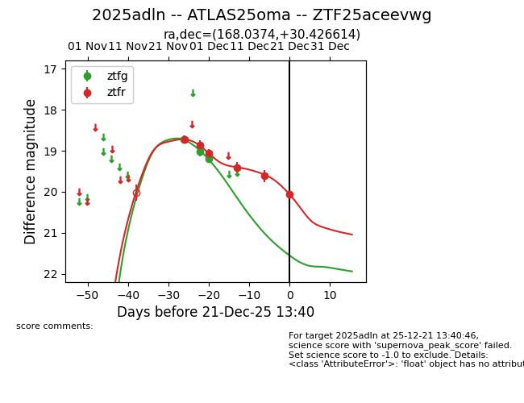
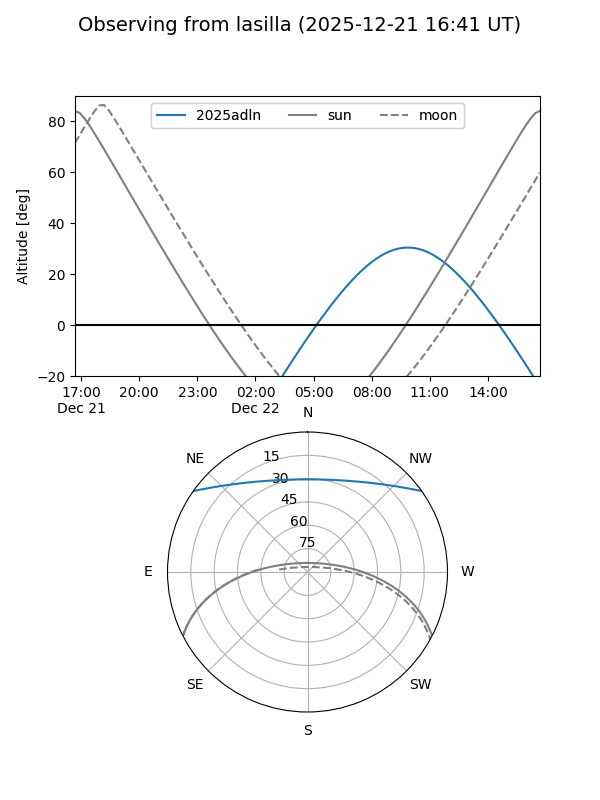
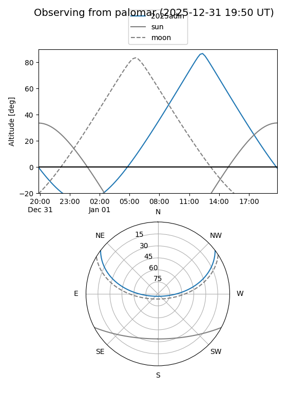
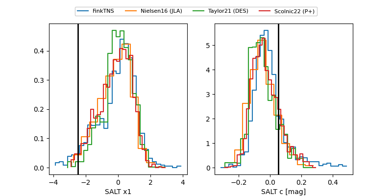

2025adln
Target 2025adln at 2025-12-31 17:00
Aliases and brokers:
FINK:
Lasair:
ALeRCE:
TNS:
YSE:
alt names
ZTF25aceevwg (ztf,fink_ztf)
2025adln (tns,yse)
ATLAS25oma (atlas)
Coordinates:
equatorial (ra, dec) = 168.0374,+30.42661
equatorial (HMS+DMS) = 11:12:08.97,+30:25:35.81
galactic (l, b) = (198.3958,+68.04012)
Flags:
Photometry:
last ztfg=19.20, ztfr=20.07
3 ztfg, 6 ztfr detections
Lightcurve

Visibility


Additional plots
